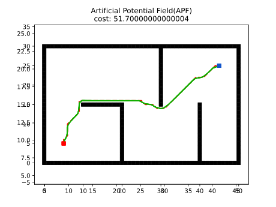
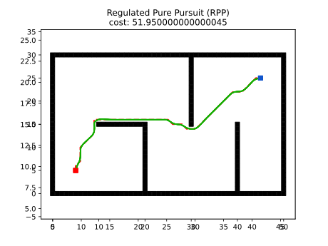
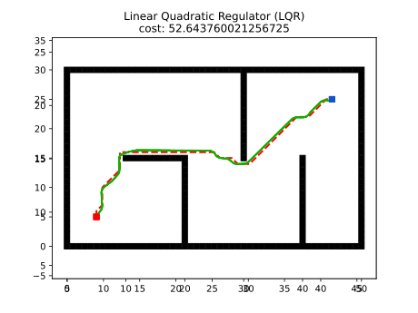
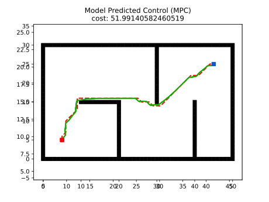

Introduction¶
Motion planning plans the state sequence of the robot without conflict between the start and goal.
Motion planning mainly includes Path planning and Trajectory planning.
Path Planning: It's based on path constraints (such as obstacles), planning the optimal path sequence for the robot to travel without conflict between the start and goal.Trajectory planning: It plans the motion state to approach the global path based on kinematics, dynamics constraints and path sequence.
This repository provides the implementations of common Motion planning algorithms. Your stars and forks are welcome. Maintaining this repository requires a huge amount of work. Therefore, you are also welcome to contribute to this repository by opening issues, submitting pull requests or joining our development team.
The theory analysis can be found at motion-planning.
We also provide ROS C++ version and Matlab version.
Quick Start¶
Overview¶
The file structure is shown below
python_motion_planning
├─assets
├─docs
├─examples
└─python_motion_planning
├─global_planner
| ├─graph_search
| ├─sample_search
| └─evolutionary_search
├─local_planner
├─curve_generation
└─utils
├─agent
├─environment
├─helper
├─planner
└─plot
- The global planning algorithm implementation is in the folder
global_plannerwithgraph_search,sample_searchandevolutionary search. - The local planning algorithm implementation is in the folder
local_planner. - The curve generation algorithm implementation is in the folder
curve_generation.
Install¶
(Optional) The code was tested in python=3.10. We recommend using conda to install the dependencies.
To install the repository, please run the following command in shell.
Run¶
Below are some simple examples.
-
Run planning and animation separately
-
Run planning and animation in one step
-
Create planner in factory mode
More examples can be found in the folder examples in the repository.
Documentation¶
For more details, you can refer to online documentation.
The documentation is auto-generated using mkdocs. To do this, enter the root directory and run
Then open the browser and go to http://127.0.0.1:8000. That is the generated documentation.
Version¶
Global Planner¶
| Planner | Version | Animation |
|---|---|---|
| GBFS |  |
|
| Dijkstra |  |
|
| A* |  |
|
| JPS |  |
|
| D* |  |
|
| LPA* |  |
|
| D* Lite |  |
|
| Theta* |  |
|
| Lazy Theta* |  |
|
| S-Theta* |  |
|
| Anya | ||
| Voronoi |  |
|
| RRT |  |
|
| RRT* |  |
|
| Informed RRT |  |
|
| RRT-Connect |  |
|
| ACO | ||
| GA | ||
| PSO |
Local Planner¶
| Planner | Version | Animation |
|---|---|---|
| PID |  |
|
| APF |  | |
| DWA |  |
|
| RPP |  | |
| LQR |  | |
| TEB | ||
| MPC |  | |
| MPPI | ||
| Lattice | ||
| DQN | ||
| DDPG |
Curve Generation¶
| Planner | Version | Animation |
|---|---|---|
| Polynomia |  |
|
| Bezier |  |
|
| Cubic Spline |  |
|
| BSpline |  |
|
| Dubins |  |
|
| Reeds-Shepp |  |
|
| Fem-Pos Smoother |  |
Papers¶
Global Planning¶
- A*: A Formal Basis for the heuristic Determination of Minimum Cost Paths
- JPS: Online Graph Pruning for Pathfinding On Grid Maps
- Lifelong Planning A*: Lifelong Planning A*
- D*: Optimal and Efficient Path Planning for Partially-Known Environments
- D* Lite: D* Lite
- Theta*: Theta*: Any-Angle Path Planning on Grids
- Lazy Theta*: Lazy Theta*: Any-Angle Path Planning and Path Length Analysis in 3D
- S-Theta*: S-Theta*: low steering path-planning algorithm
- Anya: Optimal Any-Angle Pathfinding In Practice
- RRT: Rapidly-Exploring Random Trees: A New Tool for Path Planning
- RRT-Connect: RRT-Connect: An Efficient Approach to Single-Query Path Planning
- RRT*: Sampling-based algorithms for optimal motion planning
- Informed RRT*: Optimal Sampling-based Path Planning Focused via Direct Sampling of an Admissible Ellipsoidal heuristic
- ACO: Ant Colony Optimization: A New Meta-Heuristic
Local Planning¶
- DWA: The Dynamic Window Approach to Collision Avoidance
- APF: Real-time obstacle avoidance for manipulators and mobile robots
- RPP: Regulated Pure Pursuit for Robot Path Tracking
- DDPG: Continuous control with deep reinforcement learning
Curve Generation¶
- Dubins: On curves of minimal length with a constraint on average curvature, and with prescribed initial and terminal positions and tangents
Acknowledgment¶
- Our visualization and animation framework of Python Version refers to https://github.com/zhm-real/PathPlanning. Thanks sincerely.